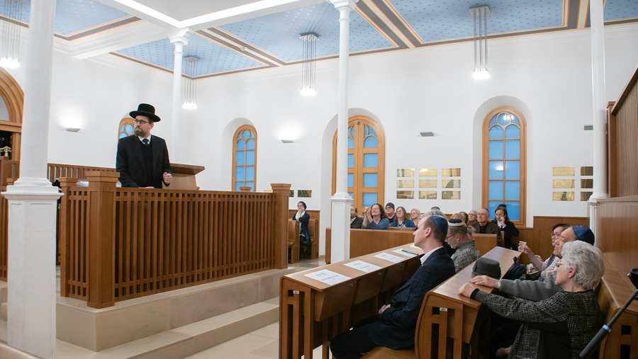
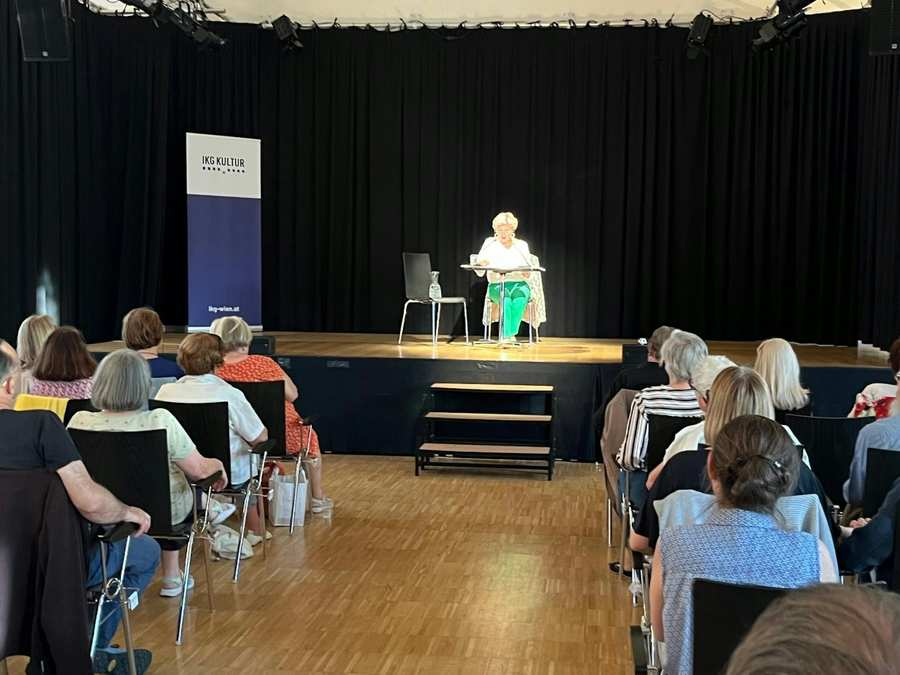
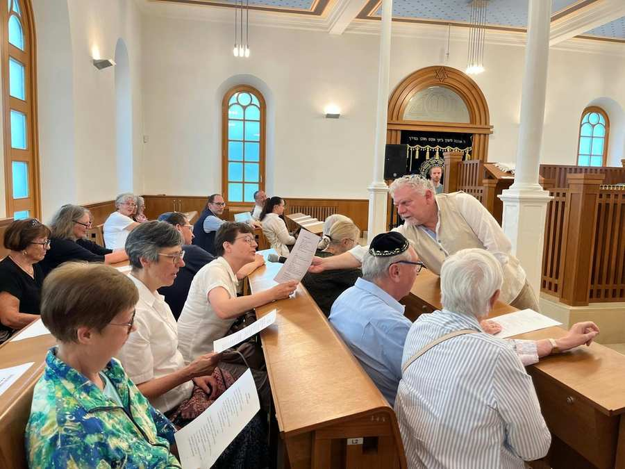
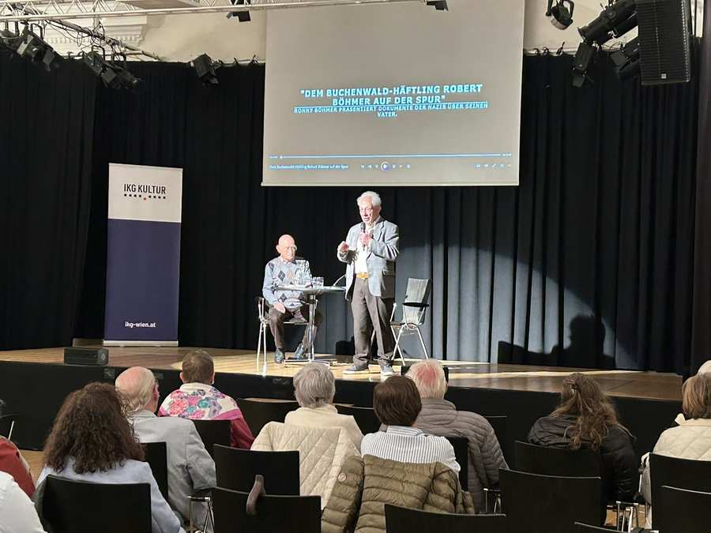
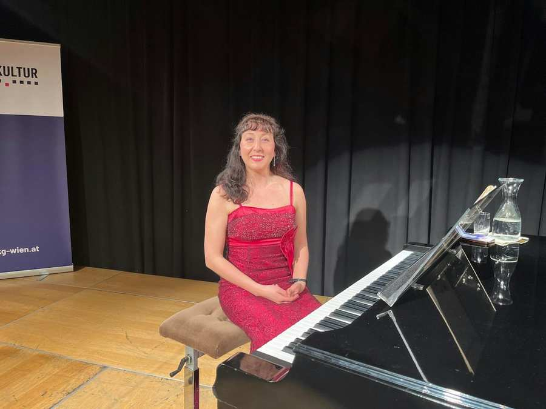
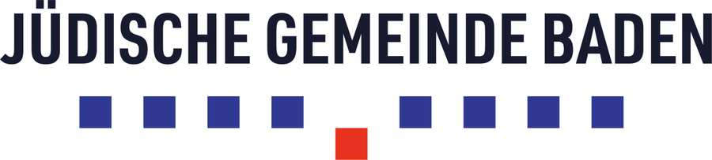
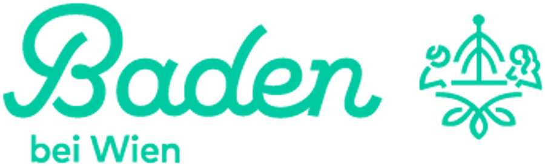

Jüdische Gemeinde Baden
kommende Veranstaltungen der Jüdischen Gemeinde Baden
Veranstaltungsberichte und News

Mirna Funk begeistert mit ihrem neuen Roman "Balagan"
Ein gelungener und inspirierender Buchabend im ZiB: Die Bestsellerautorin Mirna Funk stellte am 22. Oktober in Baden ihren aktuellen Roman „Balagan...

„Waltzing in the Clouds“: Ein musikalischer Auftakt zum neuen Jahr
Volles Haus und beste Stimmung im ZiB: Am 24. September fand anlässlich des Auftaktes zum neuen Jahr ein besonderer musikalischer Abend in Baden st...

Film trifft Dialog: "Meschugge" im ZiB
Am 26. August fand im vollen Zentrum für interkulturelle Begegnung (ZiB) die Fortsetzung der Veranstaltungsreihe Film trifft Dialog mit dem Film „M...

Film trifft Dialog: Eine Zeitreise zwischen Tradition und Gegenwart im ZiB
Die Vorführung von „An American Pickle“ stieß auf großes Interesse und war sehr gut besucht.

„Wiener Melange“ brachte Kaffeehausatmosphäre ins ZiB
Die Lesung „Wiener Melange“ am 8. Juni bot dem Publikum in Baden die Gelegenheit, die Wiener Kaffeehausliteratur gemeinsam mit Olivia Silhavy neu z...

Großes Interesse an der Frühlingsedition des Tags der offenen Tür in der Synagoge Baden
Der Tag der offenen Tür am 31. Mai in der Synagoge Baden zeigte heuer einmal mehr, wie lebendig und offen Begegnung sein kann – und setzte dabei zu...

"Dem Buchenwald-Häftling Robert Böhmer auf der Spur" - Filmpräsentation
Eine eindrucksvolle Filmpräsentation fand am 23. April in Baden statt: Ronaldo (Ronny) Böhmer präsentierte seinen gemeinsam mit seiner Tochter Lia ...

Weltfrauentag: Jüdische Komponistinnen & ihre Geschichten, Klavierkonzert mit Diana Brekalo
Anlässlich des Weltfrauentages fand am 12. März in Baden ein besonderes Klavierkonzert mit der preisgekrönten Pianistin Diana Brekalo statt. In ein...

Herzlich Willkommen in der Synagoge Baden und im ZIB
In der Synagoge Baden und dem angegliederten Veranstaltungszentrum ZIB (Zentrum für Interkulturelle Begegnung) finden jährlich zahlreiche Veranstaltungen statt.
Ein vielfältiges Programm – mit Buchpräsentationen, Konzerten, Filmabenden, rabbinischen Vorträgen, Gedenkveranstaltungen sowie einem Tag der offenen Tür in der Synagoge – unterstreicht das anhaltende Bemühen und das große Interesse an der Erinnerungskultur und der Auseinandersetzung mit der jüdischen Geschichte in Baden. Gleichzeitig spiegelt es die Freude wider, das heutige jüdische Leben wieder nach Baden zu bringen.
Geschichte
Die jüdische Gemeinde Baden kann ihr Bestehen bis ins 14. Jahrhundert zurückverfolgen. Im 18. und 19. Jahrhundert entwickelte sie sich zu einem wirtschaftlichen und kulturellen Zentrum mit Synagogen, Schulen und weiteren Einrichtungen.
Mit dem Anschluss Österreichs 1938 und dem darauffolgenden nationalsozialistischen Regime wurden Juden systematisch entrechtet, enteignet und verfolgt, sodass das Gemeindeleben bis 1945 weitgehend zerstört war.
Nach dem Krieg kehrten wenige Überlebende zurück; es erfolgte ein langsamer Wiederaufbau, Gedenkstätten wurden eingerichtet und der interreligiöse Dialog gefördert. 2005 wurde die renovierte Synagoge der kurz zuvor umbenannten Jüdischen Gemeinde Baden übergeben. Im oberen Stockwerk der Synagoge befindet sich seither das „Zentrum für Interkulturelle Begegnung“. Seit 2024 bindet die IKG Wien in das Zentrum für Interkulturelle Begegnung sowie die Synagoge in ihr Kulturprogramm ein.
Newsletter-Anmeldung
Top informiert! Sie erhalten alle Infos zu unseren Veranstaltungen in Baden.
Kontakt
baden@ikg-wien.at
Anfahrt
Synagoge Baden & Zentrum für interkulturelle Begegnung (ZiB)
Grabengasse 14
2500 Baden
Standort
Wir danken unseren Kooperationspartnern
